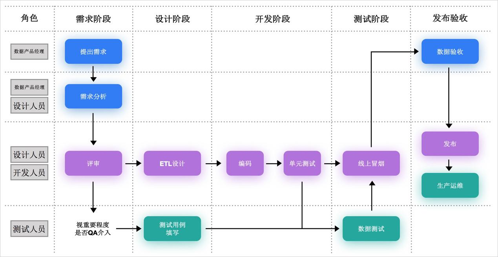
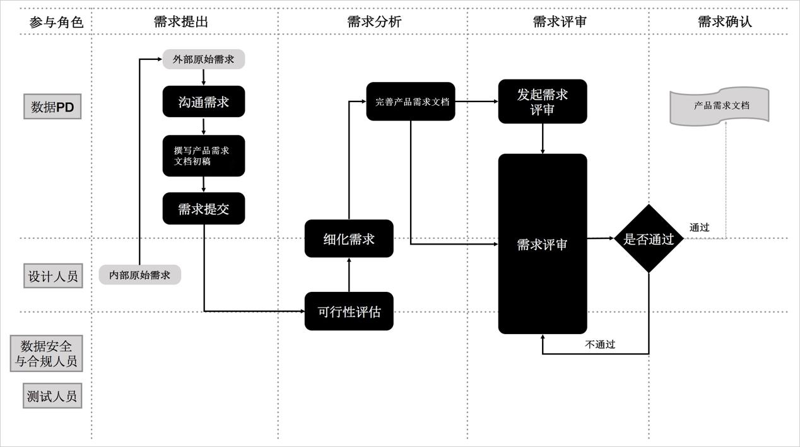
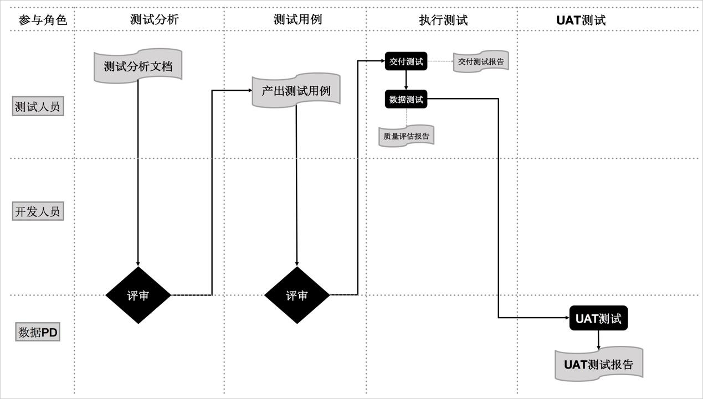

在DT时代，规范地进行数据资产管理已成为推动互联网、大数据、人工智能和实体经济深度融合、开拓更深度数据应用场景的必要条件。贴近业务属性、兼顾研发各阶段要点的研发规范能切实提高研发效率，保障数据研发工作有条不紊地运作，而不完善的研发流程会降低研发效率，增加成本与风险。
简单来说，数据资产管理实际上是对物的管理，而研发流程规范管理则是对人的行为的管理，只有落实了作为基础的后者，才能更进一步践行数据资产管理方法论。
数据仓库研发规范旨在为广大数据研发者、管理者提供规范化的研发流程指导方法，目的是简化、规范日常工作流程，提高工作效率，减少无效与冗余工作，赋能用户更强大的数据掌控力来应对海量增长的业务数据，从而释放更多资源专注于业务创新。
阶段规划
鉴于对日常数据仓库研发工作的总结与归纳，本文将数据仓库研发流程抽象为如下几点：
· 需求阶段：数据产品经理应如何应对不断变化的业务需求？
· 设计阶段：数据产品经理、数据开发者应如何综合性能、成本、效率、质量等因素来更好地组织与存储数据？
· 开发阶段：数据研发者如何高效、规范地进行编码工作？
· 测试阶段：测试人员应如何准确地暴露代码问题与项目风险，提升产出质量?
· 发布阶段：如何将具备发布条件的程序平稳地发布到线上稳定产出?
· 运维阶段：运维人员应如何保障数据产出的时效性和稳定性?
角色职责
·数据产品经理：负责承接、评估业务方提出的数据需求，并组织需求评审、产出产品需求文档，同时需要把控其他更为细化的技术评审.
·设计人员：根据已定稿的产品需求文档所述需求进行数据探查，了解数据形态（数据质量、数据分布），同时根据探查结果实现表涉及、MAPPING涉及、调度涉及等系分设计工作.
·开发人员：根据设计人员产出的稿件制定计划落地代码，同时进行单元测试与CODE REVIEW。
·测试人员：负责验证需求与结果的一致性，发现代码问题与项目风险.
·运维人员：负责发布任务，并处理数据、程序、调度、监控告警等的异常事件，保障数据产出时效，程序高效运行和生产稳定性。
·信息安全与合规人员：在需求评审前期负责需求实现的安全性与合规性。
数据仓库研发规范整体流程
如下图所示，根据阶段规划与角色职责的内容，整理出数据仓库研发规范的整体流程。

作为承接业务方数据需求的数据产品经理，在需求阶段需要规范首次需求流程和迭代需求流程。
数仓的最基本职责是定义和发现在企业决策中使用的信息，随着企业战略方向的改变与业务方对行业判断的变化，需求会不断变化。这样的特性决定了数据仓库需求的多样性和迭代性。
首次需求流程
对于业务方首次提出的需求，重点工作在于评估完成该需求的技术、数据、合规的可行性后，细化需求的实现方式完成产品需求文档，并组织需求评审会议多方共同敲定需求最终实现方案。
首次需求流程包括以下步骤
1.需求提出
o外部沟通：数据产品经理主导，负责与外部门业务方充分沟通。力求获取并理解业务场景（背景）、目标和实现价值.
说明 此处不必与业务方讨论需求实现的途径或细节，双方应秉持着荣誉勋章游戏法则，即只了解需要达到什么目标，而不讨论如何实现。
o落地产品需求文档的初稿：得到充分信息后按照数据仓库需求模板中的常规需求申请单，将需求转化为产品需求文档的初稿。
2.需求分析
o可行性分析：数据产品经理主导，邀请设计人员、数据安全与合规人员，对需求进行评估。
·需求合理性
·数据可行性：评估当前已有数据能否支撑需求开发，如缺少数据则需另行规划缺失数据的抽取方案.
同时建议进行深入的数据探查，包括但不限于数据完整性、字段离散值分布情况、空值、零值、重复值占比等情况。
·技术可行性：评估当前已有数据模型能否支撑需求开发，如不能则需规划模型改造方案，并需充分评估其影响，同时在测试环境进行模型测试。
说明 如果涉及资损、精确对账或其他关键模型的改造，测试人员必须进行测试。
·是否满足安全与合规要求：依企业自身数安要求严格控制数据内部流向，划分研发过程中数据可流入的库、项目、表、字段等；对于流出外部的数据，更需严格评估流出数据内容、流出目的地是否符合公司数安要求，此项评估是不可跳过的节点。
·实现细节分析：数据产品经理主导，对实现需求的细节关键点进行确认，包括但不限于数据口径、接口格式、供数频率和需求优先级
o完善产品需求文档：完善产品需求文档的初稿。
需求评审
数据产品经理主导，邀请设计人员、测试人员发起需求评审会。会议内容主要包括：
o各方提出对于产品需求文档中各细节的疑问。
o共同达成对于疑问的解决方案。
说明 评审会议上不得遗留影响后续研发流程的关键问题，否则视为评审不通过。
4.需求确认
N个工作日（视各企业实际情况而定）内如无异议，则产品需求文档定稿，并开始进入后续的涉及与开发阶段。
迭代需求流程
对于同一需求，在完成首次需求评审并定稿产品需求文档后，业务方再次提出的需求，均属于迭代需求。
迭代需求的流程与首次需求流程类似，均需进行可行性分析、实现细节分析，分析完成后事实际情况来定是否需再次进行需求评审会，最终将新老需求合并至产品需求文档定稿中。
迭代需求流程包括以下步骤:
1.需求变更申请
数据产品经理完成业务方迭代需求对接后，将新的需求录入数据仓库需求模板的迭代需求申请单中（如果企业具备需求相关管理平台，建议通过平台+数据库形式规范化存储不断迭代的每个需求版本）。
2.需求变更评审
原则上需求评审需由数据产品经理发起评审会议来完成，但如果需求迭代内容不多，评审方式可视情况而定选择邮件或现场会议方式，具体视变更内容由变更委员会决定。
评审内容仍为实现需求必须面对的技术可行性、数据可行性、安全与合规要求性展开讨论，如多方有异议则必须共同达成一致性解决方案。
3.需求合并与确认
数据产品经理将上一版本定稿的产品需求文档内容与本次评审定稿的产品需求文档内容进行合并。
如果两个工作日内无异议，则视为需求确认。
在需求阶段完成后，数据产品经理会产出最终版本的产品需求文档，以供设计人员进行设计工作。
设计工作包含数据探查和两大部分。
·数据探查旨在了解来源数据的数据形态，例如数据质量、数据分布等。结合业务场景，帮助分析和判断需求实现的可行性以及找出潜在的数据问题和风险。
·系分设计则包括表设计、Mapping设计和调度设计等最实际的设计工作。
设计完毕后，最终将产出供开发人员参照实施开发的ETL设计文档、数据探查文档、调度设计文档，为需求的有效落地打下坚实基础。
设计阶段的流程包括以下步骤
1.数据探查
数据探查的目的是了解数据的形态，找到潜在问题于风险，是决定数据可靠性的关键步骤。数据探查报告可以为后续开发阶段提供指导，并作为依据指定开发计划。
数据探查的内容主要包括但不限于以下内容：
o源表数据主键字段重复数
o源表字段空值/异常值的统计数
o源表之间关联关系
o源表字段的数据格式
o源表增量规则
探查完成后，最终产出数据探查报告。如果发现当前数据无法支撑需求落地，则要将需求退回数据产品经理，由数据产品经理发起迭代需求流程。
2.系分设计
系分设计包括表设计、Mapping设计和调度设计三部分。
o表设计：依据需求设计目标产出表、中间产出表。包含表名、表名解释、字段名、字段类型、字段注释以及字段安全等级等。
表设计的步骤如下所示：
a.设计表名、字段名：要求相同的字段在不同表字段名相同。
b.设计主键和外键。
c.设计字段注释：通过标注字段注释、枚举值来表名字段含义，如果枚举值过多，建议为枚举值创建维表。
d.设计表分区：建议所有表都创建为分区表。
e.设计数据生命周期：企业应根据自身实际情况来进行设置，也可参考如下数值：
f.设计加密技术：根据实际情况对敏感子段设计加密方案。
oMapping设计：采用图形化或伪代码的形式编写规划以下内容：
·每个字段的生成逻辑
·表与表之间的关系
·目标字段与原字段间的算法逻辑
将上述内容产出为ETL文档留存，将作为后续开发流程的第一参考依据。
3.调度设计
i.依赖设计：将ETL抽象为多个相互依赖的代码节点形成上下游依赖关系，要求如下：
·一个节点仅产出一张表,一张表仅由一个节点产出.
·下游节点的输入数据来自于上游节点的产出数据
·多并行,少串行(在分布式系统下可发挥其优势)
ii.运行周期:如果数据研发场景是在常见T+1离线计算场景,则将不同调度任务按照实际业务需求,赋予小时,日,周,月和季度等不同的调度粒度.
说明
·程序必须支持重跑
·如果SQL语句优化后，单次执行仍超过30分钟，建议拆表重新设计，建议每个节点运行时长不超过1小时。
iii.设置基线：在传统T+1（每日计算的是前一日产生的业务数据）的场景下，数据理应在第二天某个时间点按时产出以支撑BI或其他应用场景，因此应设置如下基线报警策略。
·最终产出任务基线：规定产出最终数据的任务必须在公司规定的X点X分完成，否则视为破线（同时推送相应报警）。
·中间任务报警：产出最终数据的任务的上游任务应稳定、按时运行完成。如果出现出错、变慢（运行时间明显长于历史过往平均运行时间）等可能影响最终任务完成时间的事件，则应第一时间推送报警给第一任务责任人。
iv.设置优先级：基于有限的计算资源来设置任务优先级，以保证在已有资源在被充分调配利用的情况下，能按顺序产出数据，保证重要任务的准时产出。调度设计完成后，需要产出调度设计文档。
v.数据流设计：ETL过程中，数据流向有如下限制：
·数据流向仅支持由低到高，即ODS->DWD->DWS->ADS。
·数据不能且不能跨层引用、逆向引用。
·DWS层不同集市的数据不能相互引用，必须沉淀到DWD层。
完成需求评审、模型与调度设计后，即可进入数据开发阶段。
开发阶段主要任务是将设计阶段的产出转化成具体代码的工作，过程中开发人员必须保证代码的规范性、准确性,同时进行适当单元测试，以便后续测试工作能顺利开展。
设计阶段的流程包括以下步骤：
1.代码开发：编码时需要注意以下问题：
o层次分明、结构化强。
o增加必要注释以增强代码可读性。
o充分考虑执行速度最优的原则。
o四个空格为一个缩进量，所有缩进皆为一个缩进量的整数倍，按代码层次对齐。
o不建议使用select *操作，所有操作必须明确指定列名。
o所有产出表都需要有物理主键或逻辑主键，并纳入周期性数据质量监控。
2.单元测试：代码开发完成后，开发人员需要对代码进行单元测试，单元测试阶段包括：
o规范性检查。
o代码质量检查：建议单条SQL执行时间不超过30分钟。
o数仓特殊需求检查。
o指标特性检查。
单元测试完成后，需整理输出单元测试报告和发布操作文档，以便开展后续发布工作。
3.Code Review
单元测试完成后，需要由其它开发人员进行Code Review，最后查看Code Review报告。Code Review包括数据一致性检查、数据完整性检查和指标间逻辑检查。
开发阶段已经完成了代码的落地，为发现代码问题、暴露项目风险、提升产出质量，因此需进入测试阶段通过测试用例对代码进行分析，为最终发布提供决策的依据。

测试阶段的流程包括以下步骤：
1.测试分析：根据需求阶段、设计阶段的要求，结合来源数据的探查来明确整个测试流程的目标、方案、风险于难点。
o测试范围
o测试策略和方法
o具体交付物、退出标准
o预期风险
o测试环境、测试数据的准备
此外，加以测试分析经过企业内部评审或项目组评审，以便保测试的科学性。测试分析完成后，需输出测试方案分析报告。
2.测试用例准备
明确测试进行的方案后，需进行测试用例的编写和测试代码、数据的准备。测试用例编写需遵循结构有序、条理清晰、他人可执行的原则，同时各团队需有效维护和保存，以便日后进行复用、故障问题回溯。建议测试用例编写完成后组织公司内部评审.
3.执行测试
i.交付测试：为了将问题在前期设计、研发和自测环节完成收敛，需进行交付测试，以便保障流入到测试执行环节的代码达到一定的质量标准。
交付测试的标准包括编码是否符合规范、是否完成了Code Review、是否提供了数据探查报告、交付缺陷的严重程度和用例占比、选用测试用例集的执行通过率。测试完成后输出交付测试报告。
ii.数据测试：测试期间需重点关注以下事项。
·代码规范性：命名规范、编码类型是否符合要求。
·数据规范性：命名规范、表结构规范、精度要求、空值处理方式、时间类型格式等是否符合要求。
·数据基础：主键唯一性、空值、重复值、无效值占比是否符合要求。
·业务正确性：各业务点是否被正确实现，可通过划分边界值、等价类等样本数据进行验证。
·代码性能：验证代码是否可在业务要求产出的时间成功运行完成。
测试期间需严格按照事前的测试策略和测试用例进行测试执行，建议将测试过程中的测试点修改补充到测试用例中，为今后线上问题进行回溯和排查提供参照和依据。
iii.测试报告：测试完成后需发布质量评估报告，报告中需表现当前项目缺陷修复情况、遗留问题排期评估、发布后的预期风险，以及最终关于发布或延期的结论。
iv.UAT测试：交付测试、数据测试完成后，数据产品经理则应站在在业务角度读产出数据进行UAT验证，最终给出UAT验证报告。
发布是将具备发布条件的程序发布到线上系统，并以生产标准进行数据产出的过程。发布分为正常发布和紧急发布。
·正常发布：发布节奏在原则上是可预见性、周期性的，发布计划可提前制定和公布。正常列入排期计划的需求都必须按照正常发的节奏安排发布计划。
·紧急发布：紧急发布是为应对突发性、紧急性状况而额外开启的可选发布，如线上BUG紧急修复、突发性需求等。
在接到紧急发布需求后，第一时间应评估是否可随最近一次正常发布窗口期发布，如不可以则根据企业实际情况发起紧急发布申请。
发布阶段的流程主要包括发布申请、发布审批和发布执行。
1.发布申请：发布申请是发布工作的进入环节，该环节主要包括程序源代码、质量评估报告、UAT验收报告和发布版本。
2.发布审批：审批环节是对发布申请合法性的赋权和放行环节。在该环节，需要对发布申请的合规性、规范性和合理性进行审核，具体审批目的包括但不限于以下几点：
o发布内容是否与原始需求一致。
o发布内容是否与数据安全、合规要求有冲突。
o发布内容是否会造成任务报错、脏数据写入等情况.
o发布内容的发布时间段是否合理或需要调整。
o紧急发布的必要性。
建议安排为对业务逻辑、代码较为熟悉的人员来把控审批流程。审批通过后即进入发布执行阶段。如不通过，则发布立即终止，或驳回申请进行调整后重新申请。
审批环节是一个非常重要且不可或缺的环节，它关系到数据生产环境的稳定性和数据的可靠性、安全性，建议企业根据自身情况安排经验丰富的相关人士来承担此项工作。
3.发布执行：审批通过后，由运维人员执行发布。
为保证严格按照开发人员的发布操作步骤将程序正确、完整的发布到线上，执行发布应严格按照发布操作步骤执行，且可查询操作日志记录。
发布完成后，发布人员需要启动关联通知工作。
4.关联通知：发布人员需将发布变更信息及时通知包括但不限于以下关联方。
o该代码所在节点的一级子节点责任人。
o任务关联产出基线责任人。
5.数据质量监控与冒烟测试：发布完成后，开发人员根据数据与业务特点配置数据质量监控规则，并进行冒烟测试。
冒烟测试必须完成至少一个调度周期的运行，以验证新发布或者变更的任务节点可行性。如冒烟测试不通过，则发布执行人员需根据情况执行代码回滚或者通知开发人员做紧急线上发布。
开发人员按需将代码发布上线后，还需要及时处理数据、程序、调度、监控告警等的异常事件，保障数据产出时效，程序高效运行，生产稳定性。数据开发人员主要需要处理以下线上事项。
·程序异常处理、性能优化
·调度异常处理
·数据质量监控规则异常分析、规则优化
·数据异常的核查
运维阶段的流程包括影响分析、方案制定与实施、实施验证。
1.影响分析：通过监控规则捕获、自主发现或其他方法获取关于数据产出时效性、数据准确性等指标的异常情况。异常情况包括但不限于：
o任务运行失败
o任务运行时间过长
o产出表中出现脏数据
2.方案制定与实施：根据影响分析的结果判断是否对线上数据应用有影响，如有则需及时将告警信息推送至任务责任人，并判断原因、确定可行性解决方案。
i.开发人员提交线上变更申请。
ii.审批人员（建议安排为对业务逻辑、代码较为熟悉的人员）审批允许发布变更。
iii.运维人员按脚步骤实施发布，完成后通知数据开发人员进行验证。如果验证失败，则运维人员按修正脚本的回滚方法回滚并将结果反馈给开发人员。
3.实施验证：开发人员在收到运维人员实施成功的通知后，开始验证变更结果是否符合预期，如符合预期，则开发人员需要将此次变更的原因、内容及生效时间通知直接下游及关联方的人员。如不通过，则反馈运维人员执行回滚。